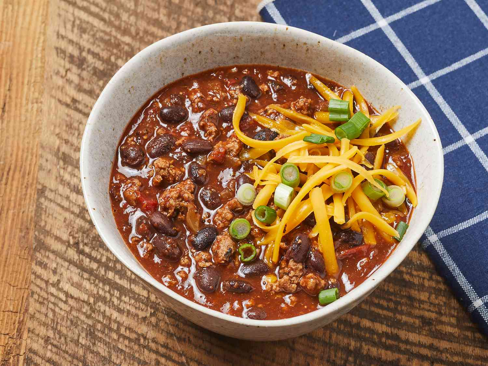

Chili

Description
Chili is a warm and hearty dish that is easy to set and forget. This recipe uses a slow cooker.
Ingredients
- 2 tbsp olive oil
- 1 chopped onion
- 2 cloves minced garlic
- 2 lb lean ground beef
- 2 16oz cans of kidney beans, rinsed and drained
- 1 28oz can of diced tomatoes
- 1 15oz can tomato puree
- 1 cup water
- 1 4z can chopped green chile peppers
- 2 tbsp mild chili powder
- 2 tsp salt
- 2 tsp ground cumin
- 1 tsp ground black pepper
Steps
- Heat oil in skillet over medium-low heat. Sautee onion and garlic for 5 minutes.
Add ground beef and cook and stir until browned (8-10 minutes).
- Transfer mixture to slow cooker. Stir in beans, tomatoes, puree, chile peppers, chili powder, salt, cumin, and black pepper.
- Cook on low for 4-6 hours.